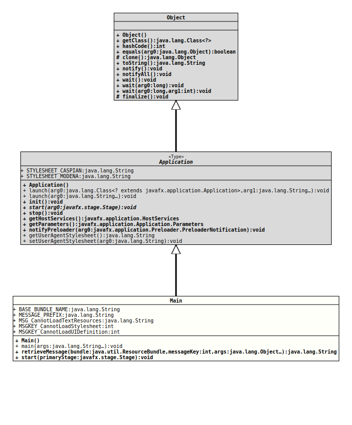

java.lang.Object
javafx.application.Application
org.tquadrat.shootingtimer.Main
@ProgramClass
@ClassVersion(sourceVersion="$Id: Action.java 944 2021-12-21 21:56:24Z tquadrat $")
@API(status=STABLE,
since="0.1.0")
public class Main
extends Application
The main class for the Shooting Timer application.
- Author:
- Thomas Thrien (thomas.thrien@tquadrat.org)
- Version:
- $Id: Action.java 944 2021-12-21 21:56:24Z tquadrat $
- Since:
- 0.1.0
- UML Diagram
-

UML Diagram for "org.tquadrat.shootingtimer.Main"
{kind=link}
-
Nested Class Summary
Nested classes/interfaces inherited from class javafx.application.Application
Application.Parameters -
Field Summary
FieldsModifier and TypeFieldDescriptionstatic final StringThe base bundle name, used for the texts and messages: "TxtMsg".static final StringThe message prefix for the messages: "ST".static final StringMessage: "Unable to locate text resources".static final intThe message key for the message: "Unable to load CSS stylesheet.".static final intThe message key for the message: "Unable to load UI definition.".Fields inherited from class javafx.application.Application
STYLESHEET_CASPIAN, STYLESHEET_MODENA -
Constructor Summary
Constructors -
Method Summary
Modifier and TypeMethodDescriptionstatic final voidThe program entry point.final StringretrieveMessage(ResourceBundle bundle, int messageKey, Object... args) Retrieves the message with the given key from the given resource bundle and applies the given arguments to it.final voidMethods inherited from class javafx.application.Application
getHostServices, getParameters, getUserAgentStylesheet, init, launch, launch, notifyPreloader, setUserAgentStylesheet, stop
-
Field Details
-
BASE_BUNDLE_NAME
The base bundle name, used for the texts and messages: "TxtMsg".- See Also:
-
MESSAGE_PREFIX
The message prefix for the messages: "ST".- See Also:
-
MSG_CannotLoadTextResources
Message: "Unable to locate text resources".- See Also:
-
MSGKEY_CannotLoadStylesheet
The message key for the message: "Unable to load CSS stylesheet.".- See Also:
-
MSGKEY_CannotLoadUIDefinition
The message key for the message: "Unable to load UI definition.".- See Also:
-
-
Constructor Details
-
Main
public Main()
-
-
Method Details
-
main
The program entry point.- Parameters:
args- The command line arguments.
-
retrieveMessage
Retrieves the message with the given key from the given resource bundle and applies the given arguments to it.
If the resource bundle does not contain a message for the given key, the key itself will be returned, appended with the arguments.
- Parameters:
bundle- The resource bundle.messageKey- The id for the message.args- The arguments for the message.- Returns:
- The text.
-
start
- Specified by:
startin classApplication- See Also:
-